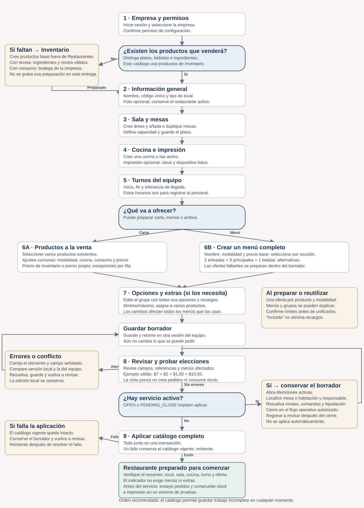

Recorrido completo
Un orden de trabajo, las decisiones que debe tomar y los videos del recorrido actual.
Resultado automático: 82 acciones contadas y 15.1 segundos sin pausas de tutorial. Incluye crear el local, preparar sala, cocina y turno, 3 ofertas a la carta, un menú con 6 alternativas, 2 extras, recarga y aplicación.
Esto prueba que el recorrido se puede completar con una API simulada. La facilidad y el tiempo de una persona nueva requieren una prueba de tarea sin instrucciones. Tampoco demuestra latencia, persistencia o concurrencia del servidor real.
Leer hallazgos y mejoras pendientes · Medición y solicitudes simuladas
El orden es recomendado. Sala, cocina y turnos tienen su propio guardado; productos, menús y extras comparten el borrador.

Inventario contiene la ficha del producto. La oferta define cómo lo vende este restaurante: modalidad, destino, consumo y precio. El menú organiza ofertas en alternativas y tiene su precio base. El mismo producto puede tener una oferta a la carta y otra para menú fijo.
Cocina o bar indica quién prepara el pedido. Sin consumo no descuenta stock. Descontar producto resta el producto vendido; descontar receta resta sus ingredientes al confirmar el pedido. Para ambos consumos se necesita una bodega de la empresa; una receta además debe ser válida. Esta grabación usa Sin consumo y no certifica recetas ni existencias.
El precio heredado viene de Inventario. Un precio propio solo modifica esa oferta. En el menú fijo, el ejemplo suma precio base, recargos por producto elegido y extras elegidos; no suma el precio a la carta del plato. Las referencias históricas incluidas no descuentan recargos.
Dos entradas son dos alternativas, no dos platos obligatorios. Mínimo 1 y máximo 1 indica elegir una. En extras, mínimo 0 y máximo 1 permite ninguno o uno. Revise los límites diferentes de datos históricos antes de confirmar su unificación.
Guardar conserva el borrador compartido. Revisar valida datos e impacto. Aplicar publica el conjunto. Si otro administrador cambia la versión, compare y resuelva; si hay servicio activo, conserve el borrador, localice la atención y vuelva a revisar después de resolverla.
El código actual requiere restaurante activo, nombre y código, área y mesa activas, cocina o bar, turno y una oferta disponible. No exige menús ni extras ni acredita que una impresora o integración externa funcione. Es necesario ensayar la operación antes de abrir servicio.
Grabados sobre la interfaz actual con Playwright CLI local y datos ficticios. Incluyen cursor y textos en español; no tienen voz. No se grabó la contraseña ni se modificó el catálogo real.
4 acciones del guion · 0.7 s en la prueba automática sin pausas.
8 acciones del guion · 1.6 s en la prueba automática sin pausas.
5 acciones del guion · 0.6 s en la prueba automática sin pausas.
6 acciones del guion · 0.6 s en la prueba automática sin pausas.
8 acciones del guion · 1.4 s en la prueba automática sin pausas.
20 acciones del guion · 3.1 s en la prueba automática sin pausas.
16 acciones del guion · 1.3 s en la prueba automática sin pausas.
15 acciones del guion · 5.7 s en la prueba automática sin pausas.
Sin explicar los botones: “Prepare un local con dos mesas y un almuerzo de $7. Ofrezca dos entradas, tres principales y una bebida; añada queso por $1,50 a dos principales. Guarde, retome y aplique cuando esté listo”. Mida tiempo, dudas, retrocesos y elecciones incorrectas. Compare con el video solo después del intento.
Fuentes de reglas: RestaurantOperationsService.configurationStatus, RestaurantCatalogWorkspace, CatalogMenusEditor, CatalogGroupsEditor y catalogPreview. Consulta del grafo y sus límites . Los tutoriales no cubren alta de empresa, permisos, productos base, recetas, impresoras físicas, pagos ni cierre de atenciones.